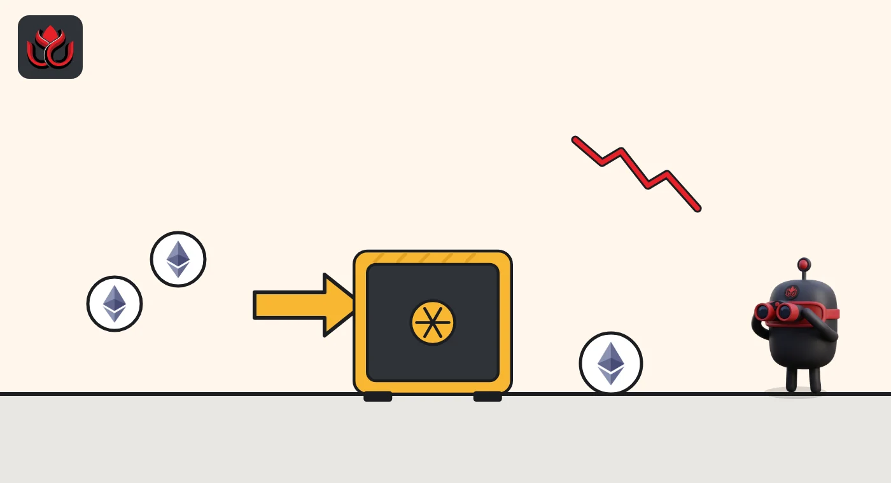

BitMine bought 9,587 more ether, but its staking income estimate fell $49 million in a week
BitMine Immersion now reports 6,070,092 ETH. It staked no new coins this week, its yield estimate slipped, and ether's drop since its count has cut about $870 million off the pile's value.
Key points
- BitMine says it bought 9,587 ETH in the week to November 8, up from 8,573 ETH the week before, for 6,070,092 ETH in total.
- Staked ether stayed at exactly 5,227,037 ETH in both weekly updates, so the 9,587 new coins were not staked, and BitMine's yearly staking income estimate fell from about $358 million to about $309 million.
- CoinGecko values the 6,070,092 ETH at about $12.69 billion on Tuesday morning, November 10, versus about $13.56 billion at the $2,234 price BitMine used.
What BitMine reported
BitMine Immersion Technologies (BMNR), the largest public-company holder of ether, put out its weekly update on November 9, 2026, at 11:47 a.m. ET. The release counts 6,070,092 ETH as of 2:00 p.m. ET on November 8, after 9,587 ETH bought in the past week. That is 4.97% of ether's 122.2 million supply.
At the $2,234 Coinbase price BitMine used, the new coins were worth about $21.4 million. The week before, BitMine's November 2 release reported 8,573 ETH bought and 6,060,506 ETH in total. The company also lists 216 bitcoin, $475 million of cash and marketable securities (down from $498 million), a $180 million stake in Beast Industries and a $75 million stake in Eightco Holdings.
The staking count did not move
Staking means locking ether to help run the Ethereum network in return for rewards. Both releases give the same staked figure: 5,227,037 ETH, about 86% of holdings. So the unstaked part grew from 833,469 ETH to 843,055 ETH, up 9,586 ETH, almost exactly the 9,587 BitMine bought.
The income estimate fell more than the price. BitMine put current yearly staking income at about $358 million on November 2 and about $309 million on November 9, a drop of about $49 million, or 14%. The releases name seven-day staking yields of 3.03% and 2.65%. Ether's price used fell only about 1%, from $2,261 to $2,234.

The numbers
Week over week, from BitMine's own releases.
BitMine weekly figures
as labeled
Source: BitMine, November 9, 2026; BitMine, November 2, 2026
What the market says on Tuesday
Ether kept falling after BitMine's count. CoinGecko showed $2,091 at 6:44 a.m. ET on November 10, down 7.8% in seven days and 16.4% in 30 days.
CoinGecko's company treasury list already shows BitMine at 6,070,092 ETH, worth about $12.69 billion. That is roughly $870 million less than the same coins at BitMine's $2,234 price. BitMine holds 74.5% of the 8.15 million ETH that CoinGecko tracks for public companies. CoinGecko lists no cost basis for BitMine, so its gain or loss is not shown.
We could not open Arkham or Etherscan in this run to match the count to labeled wallets, and BitMine's release names no wallet addresses. The totals here rest on the company's release and CoinGecko.
LC Insight analysis
This section is our reading of the facts above, not a statement of fact.
- We think the unchanged staking count is the detail to watch. Buying slightly more each week while leaving new coins unstaked can be routine timing, but BitMine has not said why.
- The lower income estimate shows how much of a treasury company's pitch depends on network yield, which BitMine does not control. A 2.65% yield on a falling ether price shrinks the dollar income on both ends.
- BitMine holds 74.5% of the ether CoinGecko tracks for public companies, so its weekly release is close to the whole story of corporate ether buying. A slowdown there would show up across the sector.
What's next
- Whether the next weekly release shows the staked figure above 5,227,037 ETH
- BitMine's seven-day staking yield versus 2.65%
- Ether versus the $2,234 price used in the latest count
Disclaimer. This article is based on public information and the sources listed below as of the update time shown. It is for information only and is not investment, legal or tax advice. Figures may change as companies and authorities publish new data.
Sources
- BitMine Immersion Technologies, weekly holdings release via PR Newswire (November 9, 2026, 11:47 a.m. ET)
- BitMine Immersion Technologies, weekly holdings release, republished by Chainwire (November 2, 2026)
- CoinGecko, public companies ether treasury data (fetched November 10, 2026, 6:45 a.m. ET)
- CoinGecko, ether price and 7-day and 30-day change (fetched November 10, 2026, 6:44 a.m. ET)